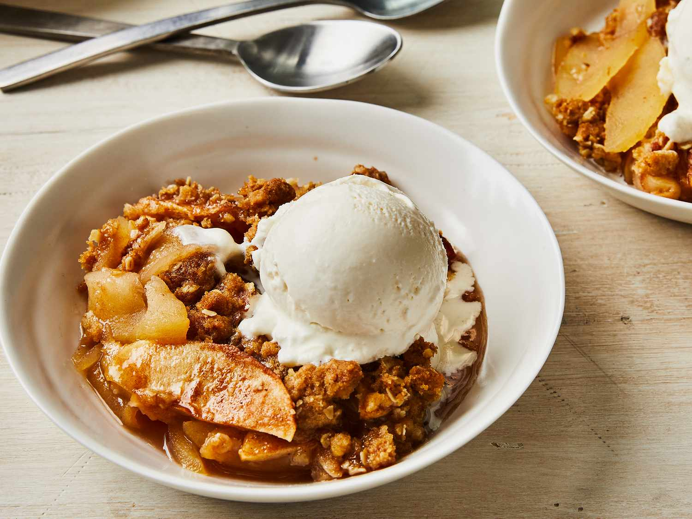

RecipeBook

dessert
Apple Crisp
This apple crisp recipe is a simple yet delicious fall dessert that's great served warm with vanilla ice cream.

dessert
This apple crisp recipe is a simple yet delicious fall dessert that's great served warm with vanilla ice cream.